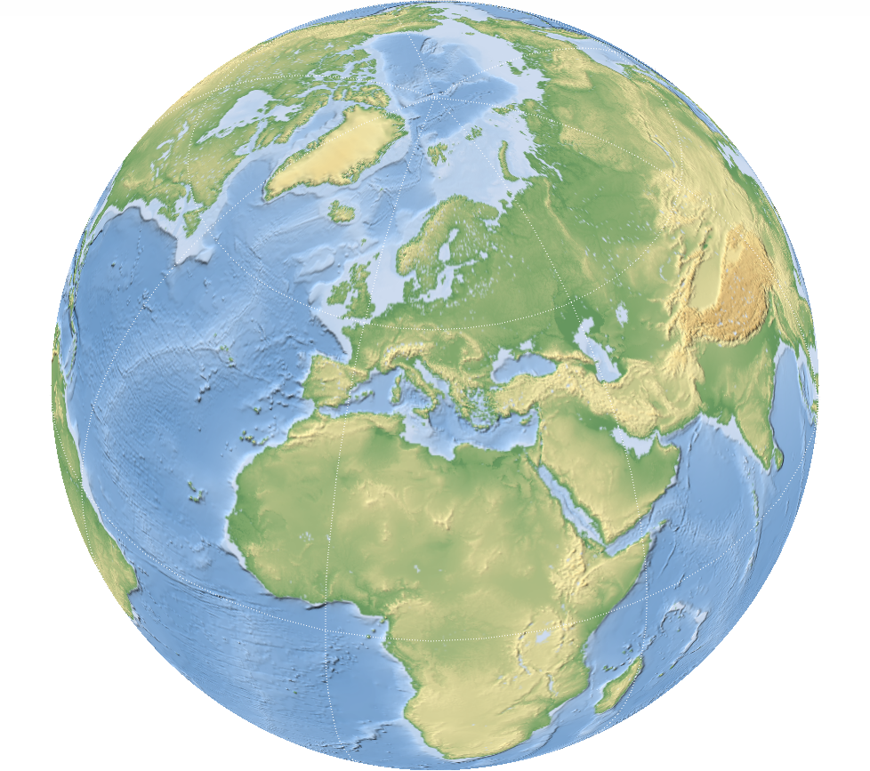

The Global Japan Project At Penn State
The Global Japan Project at The Pennsylvania State University (Penn State) aims to expand Japanese Studies by forging enduring links through research and instruction—within our university, from our university to the local community, and between the United States and Japan.
The Global Japan Project
At Penn State

Jonathan E. Abel
Greg Smits